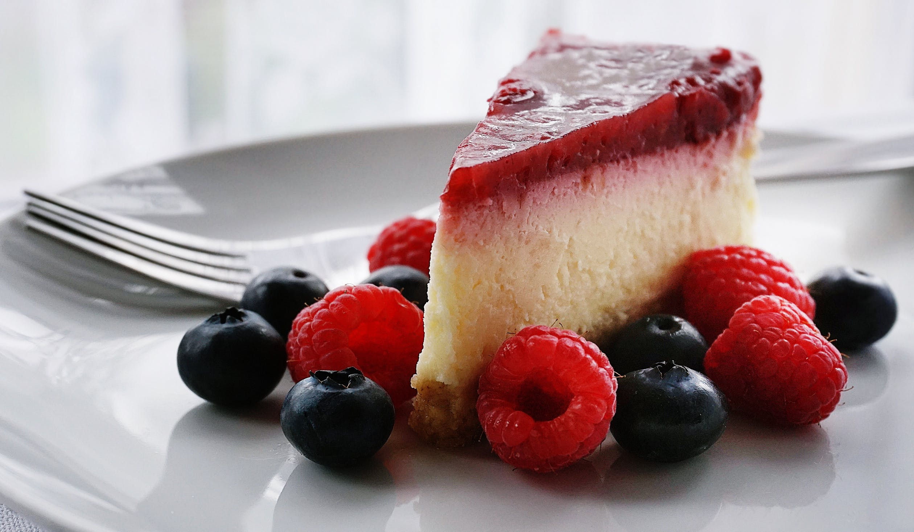

About
Contact
Images
Tofu is amazing!
This website has loads of information on how best to prepare and eat tofu. Open your mind to this beautiful block of goodness.
Sign Up
Many different ways to use it:
Blend it and use it to thicken sauces.
Fry it with some cornflour for crispy tofu.
Put it with your favourite stir-fry.

And even use it to make desserts!
Those who master the art of cooking tofu will find they are better able to manage all other problems in life.
- Sean Malone
Learn more about tofu!
Sign up for tofu recipies by clicking on the button right over there.
Sign up